ArchTverse · خانه ۵.۷۰ × ۱۲.۸۴ · Karbala
ArchTverse · کربلا
پلانها، فضاها و رندرهای داخلی
همکف + دو طبقهٔ تیپ
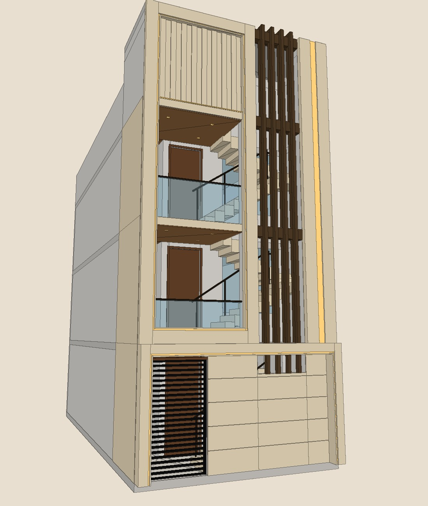
۵.۷۰ × ۱۲.۸۴
ابعاد زمین بیرونبهبیرون (متر)
۳ طبقه
همکف + طبقهٔ اول و دوم تیپ
۳۰۰ + ۲۰
کف تا زیر سقف + بتن سقف (سانتیمتر)
۲۱ سانت
ضخامت دیوارها (برداشت ۲۰ تا ۲۲)
۱ نما
فقط جبههٔ جلو؛ سمت چپ بدون همسایه
۱۷ پله
پلهٔ U شکل مرمر، تا بام
حروف نارنجی = جای دوربین رندرها
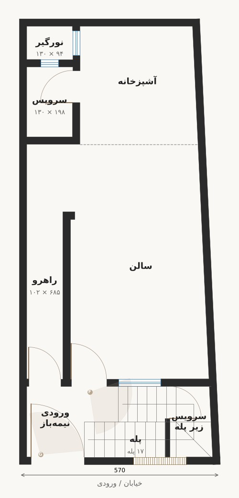
حروف نارنجی = جای دوربین رندرها
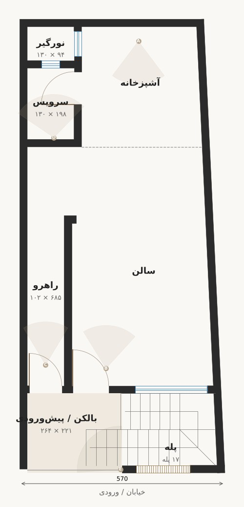
دیوار سفید گرم و گریج، قاببندی ظریف فقط روی دیوارهای تأکیدی، کف سرامیک طرح مرمر ۶۰ × ۶۰
سالن: سقف کاذب مستطیلی با گلویی و نور مخفی. آشپزخانه: سقف ساده با باکس جداکننده. سرویس: ۲۷۰
ورودی، پله و بالکن: سنگ تراورتن، بدون قاببندی، فلز برنزی تیره، دیوارکوب بیرونی
نمای A · طبقهٔ اول
از آشپزخانه رو به جلو
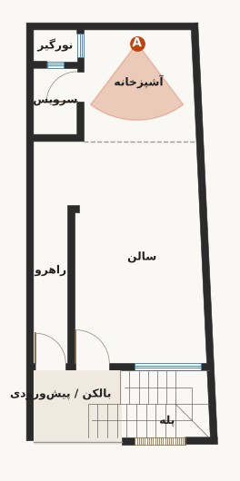
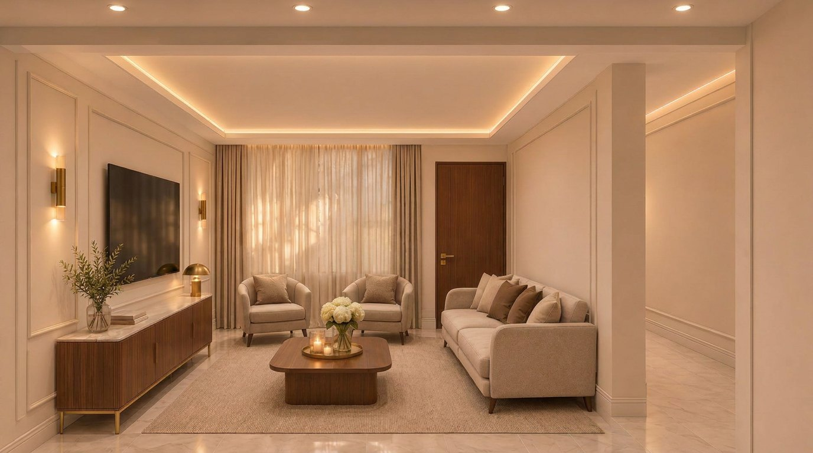
نمای B · طبقهٔ اول
از ورودی رو به آشپزخانه
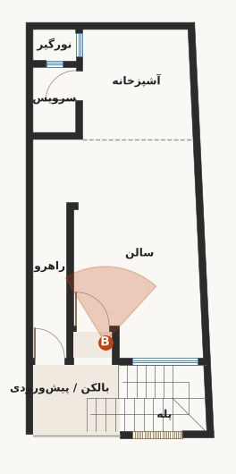
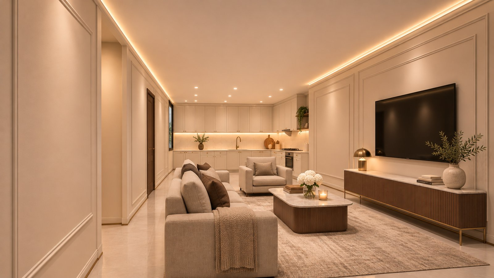
نمای C · طبقهٔ اول
۱۰۲ × ۶۸۵ سانت
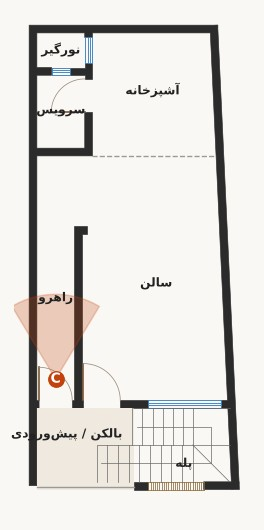
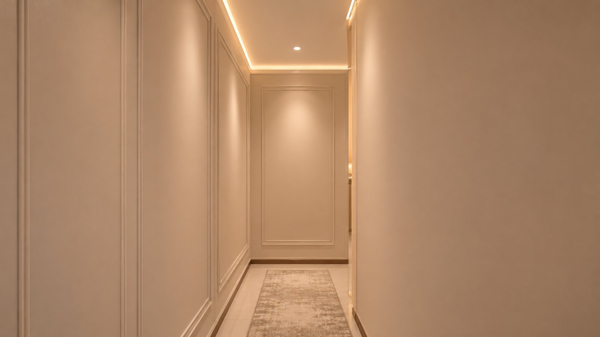
نمای D · طبقهٔ اول
۱۳۰ × ۱۹۸، سقف کاذب ۲۷۰
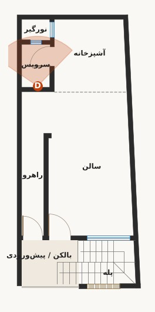
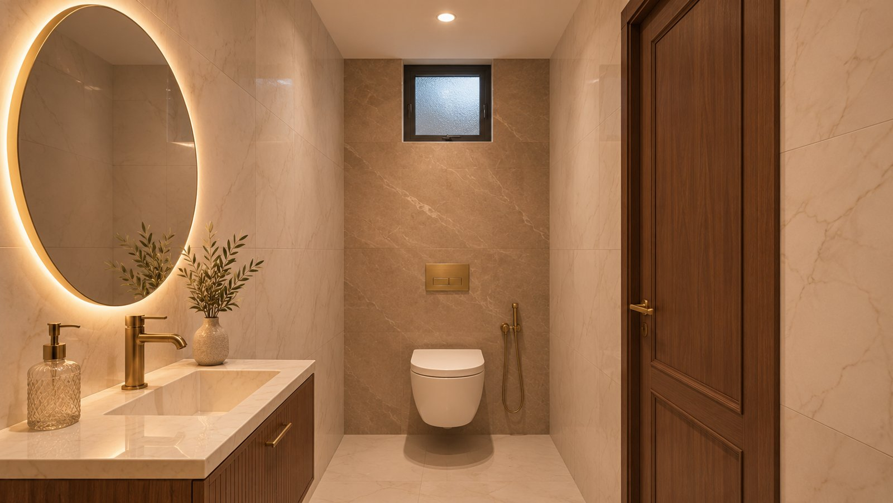
نمای E · طبقهٔ اول
نیمهباز، ۲۶۴ × ۲۲۱
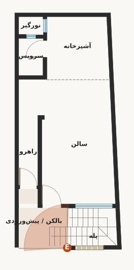
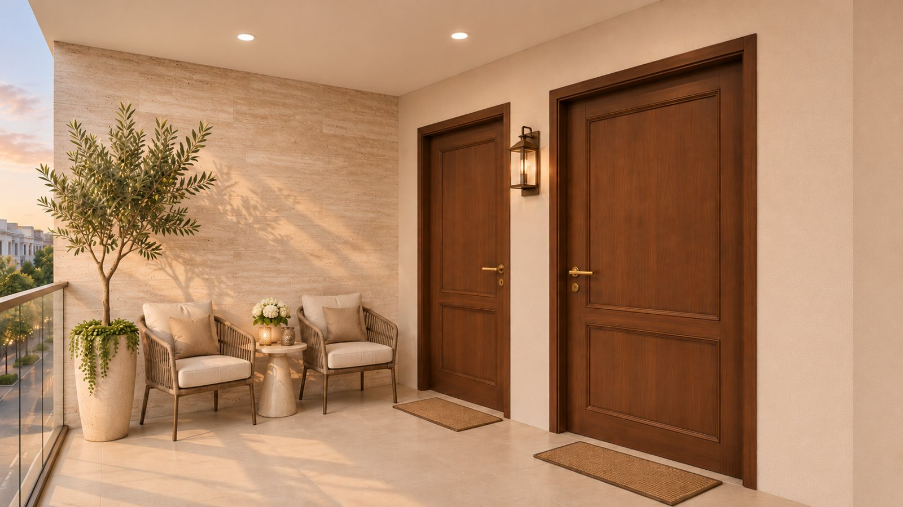
نمای F · همکف
فضای نیمهباز ورودی
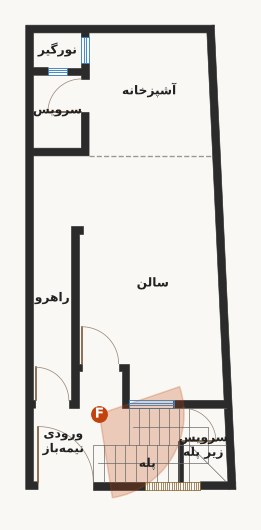
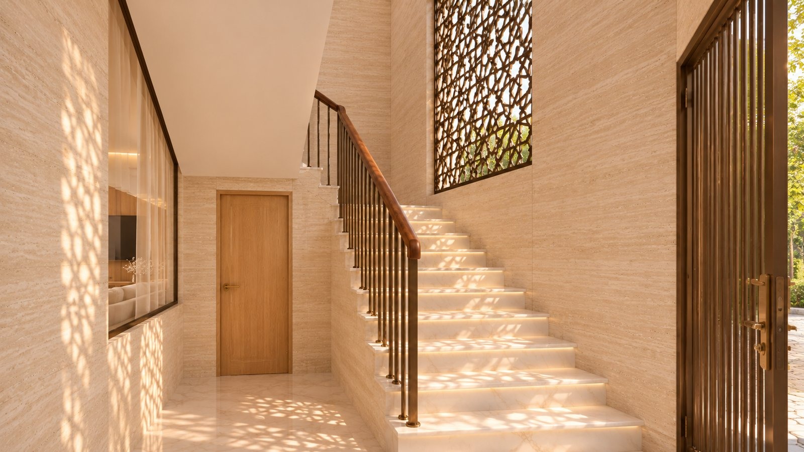
نمای G · همکف
دو درِ کنار هم
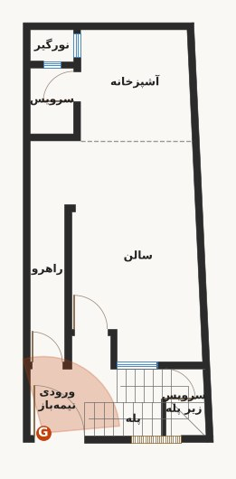
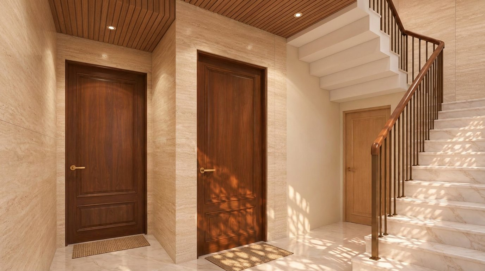
مدل حجمی از روی همین پلانها ساخته شده و با گشت تعاملی، داخل همهٔ طبقهها دیده میشود.
نمای روبهرو از مدل سهبعدی؛ همهٔ دهانهها و ابعاد از پلان
ارتفاع خرپشته و جانپناه طبق دستور کارفرما؛ بیرونزدگی قابها و ضخامت سنگ در دست تأیید
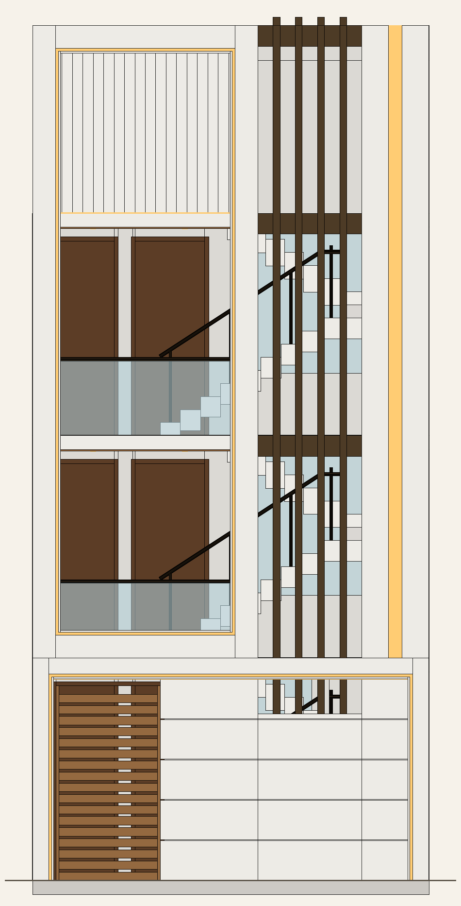
ArchTverse · كربلاء
المخططات والفراغات والتصاميم الداخلية
طابق أرضي + طابقان متكرران
٥٫٧٠ × ١٢٫٨٤
أبعاد الأرض من الخارج (متر)
٣ طوابق
أرضي + طابق أول وثانٍ متكرران
٣٠٠ + ٢٠
من الأرضية إلى السقف + سماكة السقف (سم)
٢١ سم
سماكة الجدران (قياس ٢٠–٢٢)
واجهة واحدة
الواجهة الأمامية فقط؛ الجهة اليسرى بلا جار
١٧ درجة
درج على شكل U من الرخام حتى السطح
الحروف البرتقالية = مواقع كاميرات اللقطات
الحروف البرتقالية = مواقع كاميرات اللقطات
جدران أبيض دافئ ورمادي بيج، كرانيش رفيعة على الجدران المميزة فقط، أرضيات سيراميك بنقشة رخام ٦٠ × ٦٠
الصالة: سقف مستعار مستطيل بكورنيش وإضاءة مخفية. المطبخ: سقف بسيط مع بوكس فاصل. الحمّام: ٢٧٠
المدخل والدرج والشرفة: حجر ترافرتين، بلا كرانيش، معدن برونزي داكن، إنارة جدارية خارجية
اللقطة A · الطابق الأول
من المطبخ باتجاه الأمام
اللقطة B · الطابق الأول
من المدخل باتجاه المطبخ
اللقطة C · الطابق الأول
١٠٢ × ٦٨٥ سم
اللقطة D · الطابق الأول
١٣٠ × ١٩٨، سقف مستعار ٢٧٠
اللقطة E · الطابق الأول
شبه مفتوحة، ٢٦٤ × ٢٢١
اللقطة F · الطابق الأرضي
فراغ المدخل شبه المفتوح
اللقطة G · الطابق الأرضي
بابان متجاوران
نموذج حجمي مبني على هذه المخططات، ويمكن التجول داخله في جميع الطوابق.
مسقط أمامي من النموذج ثلاثي الأبعاد؛ جميع الفتحات والأبعاد من المخطط
بروز الإطارات وسماكة الرخام قيد التأكيد
ArchTverse · Karbala
Plans, spaces and interior renders
Ground floor + two typical floors
5.70 × 12.84
Plot, outside to outside (m)
3 floors
Ground + typical first and second
300 + 20
Floor to ceiling + slab (cm)
21 cm
Wall thickness (measured 20–22)
1 facade
Front only; left side has no neighbour
17 steps
Marble U-stair, up to the roof
Orange letters = render camera positions
Orange letters = render camera positions
Warm white and greige walls, slim mouldings on feature walls only, 60 × 60 marble-look porcelain floors
Living: recessed tray ceiling with cornice and hidden light. Kitchen: simple ceiling with a dividing bulkhead. WC: 270
Entrance, stair and balcony: travertine, no mouldings, dark-bronze metal, outdoor wall lights
View A · First floor
From the kitchen toward the front
View B · First floor
From the entrance toward the kitchen
View C · First floor
102 × 685 cm
View D · First floor
130 × 198, false ceiling 270
View E · First floor
Semi-open, 264 × 221
View F · Ground floor
Semi-open entrance space
View G · Ground floor
Two side-by-side doors
A massing model built from these plans; the interactive walkthrough shows every floor from inside.
Front elevation from the 3D model; all openings and dimensions from the plan
Frame projection and stone thickness to be confirmed